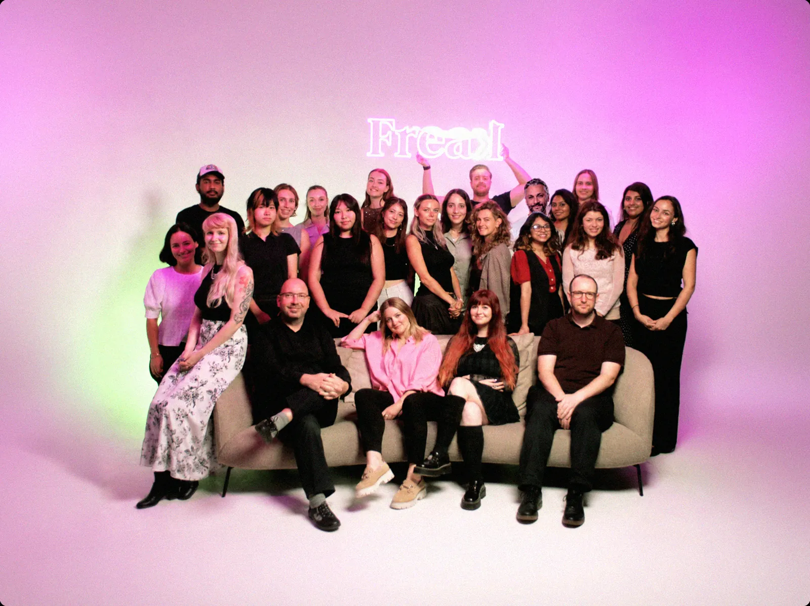
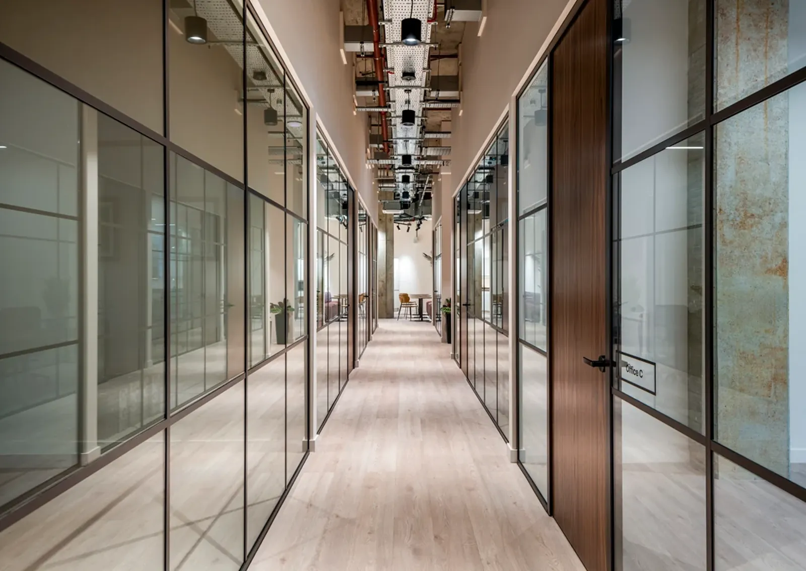

Campaigns, e-commerce, film and interactive work for clients across food, health, culture and tech.
Freak is an independent, full-service agency. We don't believe you can separate creative from data any more, so the work we make for brand, social and the digital shelf is tested and measured for what it does to revenue.
Everything is made in-house, in our own production studio for 3D, 2D, live production and interactive. Our head office is in London, with global hubs in Barcelona and Abu Dhabi, and we look after clients in more than 100 countries. We work through the line, and we fit around the way your team works.
Research, data and planning that show where the growth is, then prove it worked.
Ideas built to travel, from a global master to every format and channel it needs.
Our own studio, so ideas go from storyboard to finished asset without a handoff.
Getting the work in front of the right people, in every market and language.
The platforms that keep a brand selling, built and looked after in-house.
We pull the brief apart and ask the questions that shape the work.
Research and data show where the growth is.
Ideas and options, developed with your team.
Shot, designed and animated in our own studio.
Localised, checked and scheduled on every channel.
Tested and reported, so the next round works harder.
Head office in London, with global hubs in Barcelona and Abu Dhabi. Pick a region, or hover over a country.Pick a region, or tap a country.
A creative agency that doesn't do average. We're a small international team with a big appetite for ideas, brought together to make brands louder, sharper and harder to ignore.
From copy to campaigns, digital to print, we handle the full mix. No fluff, no filler, just work that gets noticed and gets results. We've helped brands like LUSH and Dr. Scholl's say what they mean and mean what they say.
Different clients, different challenges, same energy every time.

sales@wearefreak.comstudio@wearefreak.comjobs@wearefreak.com